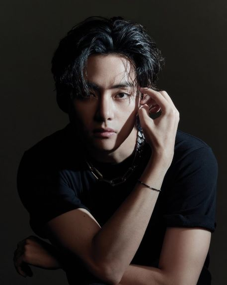

(Click/Tap to Expand Photo)
V posing for Vogue Korea
Name: Kim Taehyung
Stage Name: V
Birthday: 12/31/1995
Position: Vocals, Dancer, Visuals
INFORMATION
played as Hansung in Hwarang: Poet Warrior Youth in 2016
also sung for the soundtrack with Jin called "It's Defenitely You"
co-produced the song "4 O'CLOCK" with RM
released "Scenery" on soundcloud in 2019
released "Winter Bear" on soundcloud, accompanied by a self-directed music video on YouTube. The cover artwork was photographed by him using his paudonym vante"
written and produced "Sweet Night" for the OST of the drama "Itaewon Class"
released a solo track titled "Snowflower" on December 25 2020 featuring Peakboy
song "Christmas Tree", a song in the OST of the drama "Our Beloved Summer" that was released on December 24, 2021
coined the phrase "I purple you" during BTS fanmeeting in November 2016. Since then, it has become a symbol of BTS and their fans. UNICEF also used the phrase for their anti-bullying campaign in collaboration with BTS.
SONGS
IT'S DEFENITELY YOU (with Jin)
A Brand New Day (J-hope Zara Laracson)
Sweet Night
Christmas Tree
Stigma
Singularity
Inner Child
4 O'CLOCK
Scenery
Winter Bear
Snow Flower)
Cover: Someone Like you
Cover: Hug Me (with J-hope)
Cover: JIngle Bell Rock (with Suga)
AWARDS
Best Idol Actor (2017) MMA
Best Acting Ensemble (2018) Soompi
Best choreography (2019) Soompi - for Singularity
Best OST (2020) APAN Awards - for "Sweet Night"
Order of Cultural Merit
James Van Fleet
Special Presidential Envoy
APPEARANCES
Hwarang (2016)
Star King [(with RM) ep. 413, 2015]
Hello Counselor [(with RM) ep. 223, 2015]
My Pet Clinic [(with Jimin & Jhope) ep. 6, 2015]
Celebrity Bromance
Show! Music Core (2014, 2015)
Music Bank
Inkigayo
Music Bank (Singapore Special)
Inkigayo Super Concert in Daejon
Gyopo Hairstyle (MV)
TRIVIA
Vante came from his name and his favorite photographer Ante Badzim
His nicknames are Taetae, Blank Tae & CGV
He used to play saxophone and was learning how to play a trumpet
My Pet Clinic [(with Jimin & Jhope) ep. 6, 2015]
He is known for his love of Jazz & Classical Music